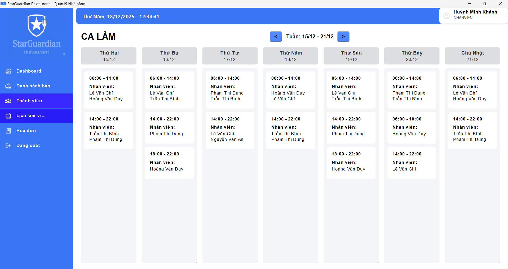

Lịch làm việc Cá nhân
Hiển thị lịch làm việc của các nhân viên theo từng ca trong tuần, giúp nhân viên dễ dàng theo dõi.
Giao diện Lịch
Lịch được chia thành các cột tương ứng với các ngày trong tuần, từ Thứ hai đến Chủ nhật.
Sử dụng nút mũi tên < Tuần... > ở trên cùng để xem lịch của tuần trước hoặc tuần sau.
Thông tin Ca làm
Trong mỗi ô ngày, thông tin ca làm việc được hiển thị rõ ràng:
- Khung giờ: Ví dụ: 06:00 - 14:00 (Ca sáng), 14:00 - 22:00 (Ca tối).
- Nhân viên cùng ca: Danh sách tên các nhân viên được phân công trong ca đó. Bạn có thể xem để biết mình sẽ làm việc cùng ai.